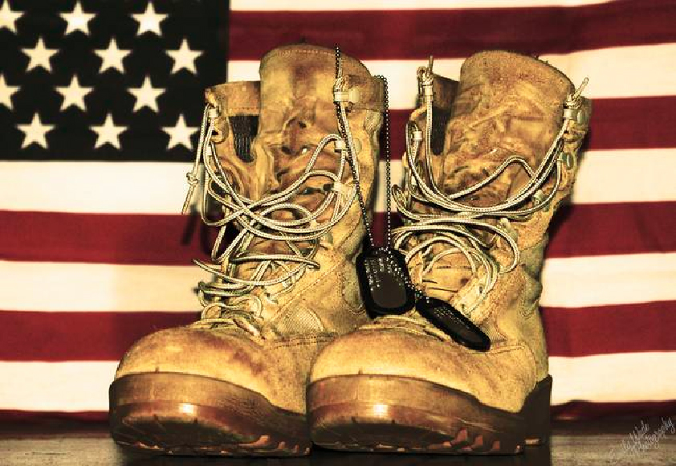
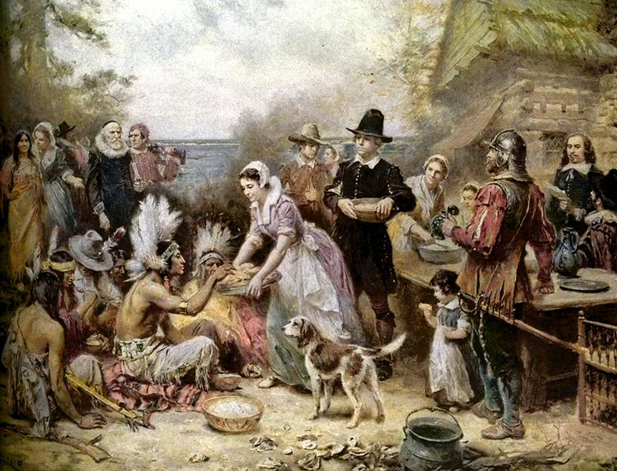

Viewpoint: May God Bless
May God Blesss in Lakota is "Wakan Tanka Kici Un"
During the autumn of 1621, settlers from the Plymouth Colony and members of the Wampanoag Tribe shared a feast to commemorate their mutual blessings. It’s not known whether turkey was served on that day but at the next recorded Thanksgiving at Plymouth, on July 30, 1623, Turkey was served, along with other forerunners of the modern feast-cranberries and pumpkin pie. The celebration gained in popularity throughout the Northeast during the two centuries that followed.
By 1863, President Abraham Lincoln declared the last Thursday in November a national holiday of Thanksgiving.
Actually “thanksgivings” were religious affairs and everybody spent the day praying.

Give Thanks by Apostle Paul
The Apostle Paul helped his readers to develop a theology of gratitude. He wrote about thanksgiving more often than any other New Testament author. From the 23 times he used the word, we learn a few lessons about thanksgiving.
Thanksgiving was always directed toward God and never toward people. People were gifts from God, and Paul thanked God for their growth, love, and faith (1 Cor. 1:4; 1 Thess. 1:2).
Thanksgiving is given through Jesus for everything (Col. 3:1, 17). Paul believed followers of Jesus could be thankful for everything because God is sovereign, and He is working things out for the believers’ good. In everything give thanks, for this is the will of God in Christ Jesus for you.” 1Thessalonians 5:16-22.
May we intentionally be aware of God’s gifts all around us, and respond with gratitude. In response to God’s gifts, it’s natural to say, “Thank you, Lord.” Gratitude is a natural response to God’s grace.
May we remember our Saved and Unsaved loved ones; our soldiers and veterans and their families; our sick and invalid loved ones and friends; our people of America who are blessed with riches, may they also remember the homeless, and shelters, soup kitchens, those families without jobs, homes, and other necessities, our senior citizens and native American Indians.
Remember we are called before God to pray for “One nation under God.”“
Dear Brothers and Sisters, remember to save a place for Jesus at the Thanksgiving table and no matter what the circumstances, the believer is to give thanks.
A Thanksgiving Psalm

O come, let us sing unto the Lord; let us make a joyful noise to the rock of our salvation. Let us come before his presence with thanksgiving, and make a joyful noise unto him with psalms.
For the Lord is a Great God, and a Great King above all gods. In his hands are the deep places of the earth; the strength of the hills is his also. The sea is his and he made it: and his hands formed the dry land.
O come, let us worship and bow down; let us kneel before the Lord our maker. For he is our God; and we are the people of his pasture and the sheep of his hand.
Psalms 95 Vs 1-7
Question of the Month
How can we show our Thanks to God?...my answer!
Daniel 6:10, Phillipians 4:6, Psalm 100:4, Psalm 118:1
Your Answer?
God Bless from my heart